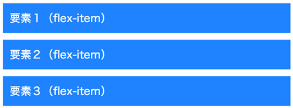
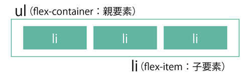
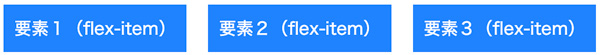

Flexbox
- 「display: flex;」で、要素を横並びにできます
- 「リストや画像を横並びにしたい」
- 「要素間の余白を均等にして、はみ出たら折り返したい」
- 「表示する順番を逆からにしたい」
- 「画像とテキストを左右交互に配置したい」
Flexboxの性質
- 以下の性質がCSSの記述によって柔軟に変更できます
- 横並びで表示される
- 親要素に合わせて横幅・高さが伸縮する
- HTMLの記述が表示順に影響しない
Flexboxの使い方
- 親要素に「display: flex;」を指定することで、子要素が横並びになります
<ul class="flex-container"> <li class="flex-item">要素１（flex-item）</li> <li class="flex-item">要素２（flex-item）</li> <li class="flex-item">要素３（flex-item）</li> </ul>
ul { list-style: none; } .flex-item { margin: 10px; padding: 10px; background: #1e83ff; color: #fff; }

display: flex; で横に並べる

ul { list-style: none; } .flex-container { display: flex; gap: 20px; /* 要素間の空き */ } .flex-item { padding: 10px; background: #1e83ff; color: #fff; }
